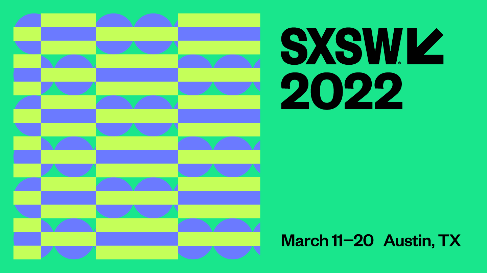

About Us:
AUSTINITE! is a website for visitors and locals alike. Users will be able to learn about upcoming events in Austin, new places to explore, and tasty foods to try! Additionally, users can blog about their experiences and offer suggestions to the website.
Featured Event:

SXSW Conference & Festivals